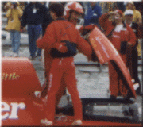
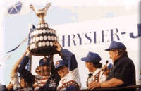

|
CLICK HERE TO SIGN UP FOR SFO - OUR E-MAIL NEWSLETTER |
|
Issue #64: (July 1)
+ Detroit APBA Gold Cup Event Status - NEW NEWS + Mitch Evans & the U-3'S Thunderous win in Evansville! + Reminder: July 11-13th: Detroit River - River Cruise + Reminder: July 26-27th: Quake On The Lake IV - Waterford MI |
|
Issue #63: (June 19)
+ Detroit APBA Gold Cup Race Status + June 24th: Unlimited Hydroplane Exhibition In St. Clair + July 11-13th: Detroit River - River Cruise + July 26-27th: Quake On The Lake IV - Waterford MI + Bernie Little Memorial In Seattle + Some Humorous Gold-Cup Class Anecdotes |
|
Detroit race tentatively set for Aug. 21-24:
Detroit News article from May 21 |
|
Issue #62: (May 10)
+ The Detroit race WILL NOT be held in June + SODT congratulates APBA on their 100th Anniversary + Bernie Little passes away at age 77 (4/25/03) + Detroit related Unlimited Light racing news from 2002 + The Detroit "Marine Prop Riders" inboard racing club + Jim Clary painting of the U-3 Vacationville.com + Detroit River Racing - A History, by Fred Farley + Other related events - Quake On The Lake, Vintage, R/C |
|
|
|
Issue #61: (September 24)
+ Thanks to everyone involved in the 2002 Gold Cup event! + Upcoming FINISH/START party for the volunteers - October 10th + The race date has been set for next year: June 19-22 2003 + Spirit Of Detroit Thunderfest reorganization + News from San Diego - Mike Hanson wins, Evans/Cooper in 3rd! + R/C powerboat racing in Oakland County MI - this Sunday |
|
Issue #60: (July 26)
+ Quake On The Lake III - this weekend - Pontiac MI + Gold Cup 2002 Photo Gallery updates + Madison race on espn2 this Saturday + This weekend's Unlimited race in Tri-Cities Washington + Congrats to local GNH/UL rookie Pingree Conflitti! + Congrats to Beth Gilday for her results in Madison! + Battle Of The Bands results + Unlimited hydroplane series heads for the Northwest |
|
Issue #59: (July 14)
+ Gold Cup results - Dave Villwock wins in Miss Budweiser! + espn2 coverage + Complete SODT Timing and Scoring report + Automotive Gold Cup "dash" results for the Unlimited Lights + Unlimited Lights final results - Phil Bononcini in Bud / Pocket Mechanic + Fire her up! |
|
All race results - direct from SODT Timing and Scoring (July 14)
A complete breakdown with lap times, speeds and position for every lap of the Jersey Speed Skiff, Unlimited Light and Unlimited heats. Note that official times for the Unlimiteds come from Hydro-Prop... our times are strictly for reference (and backup to HydroProp's system). Thanks to Roger Woz and the whole SODT Timing and Scoring crew! This is a 2.8Meg .PDF file. |
|
Issue #58: (July 12)
+ Another great day in Detroit for the second day of qualifying + Thunderfest and HydroProp coverage + The Automotive Gold Cup was cancelled + Friday racing by the Outboard Performance Inflatables |
Issue #56: (July 6)
+ Ticket-will call and credential pickup + Free viewing from Waterworks park on Thursday and Friday + Free viewing from Belle Isle for all days + Audio broadcast of the Gold Cup on the Internet + Audio broadcast of this weekends race in Madison on the Internet + Road construction in the southeast Michigan area + Detroit and Gold Cup history facts |
|
Issue #55: (June 28)
+ Gold Cup 2002 - July 11-14 - It's OFFICIAL now! + Media info from SODT + The Mark Tate Story - by APBA / Hydro-Prop historian Fred Farley |
|
Issue #54: (June 22)
+ Gold Cup 2002 - July 11-14 - It's a "GO"! + Season openers at Evansville and Madison + Hydrofest party to benefit SODT - July 10th at the Roostertail + Hydro-Prop announces the drivers and teams for 2002 |
|
|
|
Issue #53: (November 14)
+ Gold Cup 2002 - July 11-14 (tentative date) + Recent phone problems at the office + Marine Prop Riders - 50th Anniversary + Holiday special on the Jim Clary series + "Behind The Wheel" at the Dossin with Chip Hanauer + Madison, The Movie: A review of the midwest premiere |
|
Issue #52: (September 18)
+ Our Hearts, Thoughts and Prayers + Seattle Bayfair race - news, comments and results + "Behind The Wheel" at the Dossin with Chip Hanauer + Quake On The Lake II - Art Asbury induction + Jack's Shrimp Eating Contest |
|
Issue #51: (July 23)
+ FULL RACE WRAP-UP + Many new photos posted + Quake On The Lake - more local inboard hydroplane racing + Results for all the classes + Credit to everyone that helped with internet coverage + First annual Battle Of The Bands + Gold Cup press release |
| Archived copy of the NewsBits page - Sunday (July 23) |
|
All race results - direct from SODT Timing and Scoring (July 15)
This is a 2.7Meg .PDF file |
|
Issue #50: (July 15)
+ MIKE HANSON, TUBBY'S SUBS AND JONES RACING WINS THE GOLD CUP! + Mark Weber wins the J. Lee Schoenith trophy |
|
Issue #49: (July 12)
+ Our internet coverage, including streaming audio from the PA! + Results from Friday's Automotive Gold Cup race + Unlimited qualifying news & results |
|
Issue #48: (July 8)
+ Miss Madison / Oh Boy! Oberto and Steve David win in Madison + Thanks to our sponsors + Unlimited Hydroplane Hall Of Fame induction ceremony |
|
Issue #47: (July 5)
+ Detroit News article about Gar Wood + Evansville results + Madison coverage by WORX radio + Chip Hanauer - Rookie racer again |
|
Issue #46: (June 18)
+ Mandatory Volunteer meeting + Clary unveiling + Updated party schedule + Local restaurants support Unlimited Lights battle! + 2001 Unlimited Hydroplane Hall of Fame Induction Ceremony + Hydrofest benefit party at the Detroit Yacht Club + Hydro-Prop Outboard racing in Bay City at River Roar 2001 |
|
Issue #45: (May 15)
+ SODT has moved to new offices + Happy 300th birthday Detroit! + George Stratton Benefit Auction + Hotel discounts for Thunderfest fans + The 5 Litre class will not be in Detroit this year + TEAM NEWS: Excerpts from the MISS MADISON Press Release |
|
Issue #44: (Feb 26)
+ The George Stratton Benefit Auction - March 24th at the DYC + Movie day at the Dossin... "Behind The Wheel" - March 17th + "Madison" movie unveiled at the Sundance Film Festival + SODT merchandise from past years... programs, t-shirts, & more. + SODT e-mail addresses in transition |
|
|
| Issue #43: (Sep 17) The Hydro community loses a driver; Results from San Diego; Upcoming FINISH / START party for SODT volunteers. |
| Issue #42: (Aug 6) N. Mark Evans wins at Tri-Cities! Villwock wins at Seattle. Full Gold Cup WebCast archives are now available. |
| Issue #41: (Jul 13) Detroit River Festival is July 22nd; Thanks to AllWebSports; Thanks to Chuck Moore; Official Timing and Scoring Report |
| Issue #40: (Jul 13) Quake on the Lake; Charley Wiggins retires; Detroit River Festival; Other results |
| Issue #39: (Jul 11) Gold Cup & other primary results; Recap of the Gold Cup |
|
Download the official lap-by-lap Timing & Scoring Report for all classes
NOTE: The times reported for the Unlimiteds and Unlimited Lights are NOT official - those come from the UHRA and are reported in our SIGNAL FLAG ONLINE #39. This is a ZIP of the .DOC files. |
| Coverage by Hydros.org: All the Unlimited / Unlimited Lights news & results. |
| Issue #38: (Jul 8) Webcast details, photos from Robert Peters |
| Issue #37: (Jul 7) Phil Bononcini wins the Chrysler Jeep Automotive Gold Cup! |
| Issue #36: (Jul 3) Madison results and raceweek announcements |
| Issue #35: (Jun 28) Evansville results with controversial U-100 disqualification |
| Issue #34: (Jun 19) New prop-driven water speed record! |
| Issue #33: (May 22) Hanauer retires; PICO out of sport; Lake Havasu results |
| Issue #32: (Feb 26) Upcoming SODT volunteer meetings and general news |
|
|
|
|
| Issue #31: (Oct 24) News and awards from the Finish / Start Party |
| Issue #30: (Oct 15) Volunteer meeting, contest winner, "Madison" movie |
| Issue #29: (Aug 6) News & autographed Race Program contest! |
| Issue #28: (Jul 14) More from Chip's post-race press interview |
| Issue #27: (Jul 13) All the final results |
| Sunday (Jul 11) Archived copy of the NewsBits page |
| Sunday - Issue #26: (Jul 11) Chip Hanauer in PICO at over 150MPH! |
| Saturday - Issue #25: (Jul 10) A full day of racing! Drivers meeting info |
| Friday - Issue #24: (Jul 9) Today was a rain-out... No river activity |
| Thursday - Issue #23: (Jul 8) A short recap |
| Wednesday - Issue #22: (July 7) NewsBits and listing of arrivals |
| Issue #21: (Jul 5) Ready for Gold Cup coverage! Madison Results |
| Issue #20: (Jun 21) Barrie results, upcoming events & meetings |
| Issue #19: (May 16) Ticket plan changes, 1999 raffle details |
| Issue #18: (May 14) HYDROFEST party, Jim Clary depicts Cantrell's "MOST EXCITING RACE" |
| Issue #17: (May 5) U-10 team news, Jack Love inducted into MBIA HOF, Chairman's Corner |
| Issue #16: (May 2) 5-Litre's added to lineup! No GPs. Volunteer news & notes |
| Issue #15: (Apr 21) Volunteer spring gathering, USS Grayfox at the GLMI |
| Issue #14: (Mar 5) Hydro Movie Madness, Chip Hanauer, Roy Duby, and more |
| Issue #13: (Jan 28) New newsletter title, driver, racesite, and team news |
|
|
|
|
| Issue #12: (Jul 17) More photos are ready, & we have a scoring correction |
| Issue #11: MONDAY - Followup & results of all other classes |
| Issue #10: SUNDAY - Unlimited results |
| Issue #9: SATURDAY - A full day of racing |
| Issue #8: FRIDAY - Qualifying & Chrysler Jeep Automotive Gold Cup results |
| Issue #7: THURSDAY NIGHT - Qualifying results |
| Issue #6: WEDNESDAY NIGHT (July 8) |
| Issue #4: Internet plans: News, PitCam, Webcast |
| Issue #3: Related events during raceweek |
| Issue #2: Unveiling of the Clary print at Gar Wood's restaurant |
| Issue #1: Welcome to the new THUNDER NEWS newsletter |

Dave Villwock repeats - this win in the Miss Budweiser!
--- Official Results ---
Unlimited Gold Cup
Automotive Gold Cup
Unlimited Lights
Grand Prix
Jersey Speed Skiffs
Outboard Performance Inflatables
--- Pre-Race News ---
Miss Bud's new driver - Dave Villwock
Close Call for Steve Woomer & Mark Tate
Team Cooper's piston-powered improvements
31 Metro Detroit Ford Dealers sponsor U-2
Miss TruckGear - Nate Brown driving

Dave Villwock in the PICO American Dream is the Gold Cup Winner!
UHRA Recap
--- Official Results ---
A Fan's Review
Unlimited Gold Cup
Automotive Gold Cup
Unlimited Lights
Grand Prix
(sorry, due to the cancellation of the Jersey Speed Skiff
finals because of weather, I'm not sure of the official results.)
 Return to the Top THUNDERFEST page.
Return to the Top THUNDERFEST page.
All contents Copyright © 1996-2003 Spirit of Detroit THUNDERFEST, except where noted.
Web page created by Brian Reed.
All Rights Reserved.